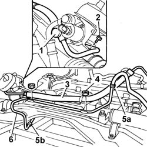
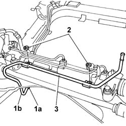

4130B80 Rigid pipe from heat exchanger to fluid reservoir - R.R. includes bleeding air
- Path
- Procedures > 41 STEERING > 4130 POWER ASSISTED STEERING > 4130B POWER STEERING HYDRAULIC SYSTEM > 4130B80 Rigid pipe from heat exchanger to fluid reservoir - R.R. includes bleeding air
- Kind
- repair procedure (removal / refitting; the operation number is the code)
- Applies to
- all engines; all production periods
- Interactive page
- https://sloeber94.github.io/elrnDB-lThss/en/#/174250
Applies to: all engines; all production periods
 Removing
Removing
 Refitting
RefittingSee in Op. 4410D10 Front suspension FRAME - R.R.
- Proceed with removing the front suspension frame without dismantling the chassis components at the bench; carry out the appropriate operation.
Applies to: engines: 3.0 V6, 3.2 V6; all production periods
1. Undo the connector on the power assisted steering box.
2. Undo the bolt fixing the supply pipe to the power steering box.
3. Remove the supply pipe from the power steering pump to the steering box.
4. Undo the nuts fixing the pipe to the power assisted steering box.
5. Working on the bands (5a) disconnect the flexible pipes to the power assisted steering box (5b) and to the duplex pipe.
6. Remove the supply pipe from the reservoir to the heat exchanger rigid pipe.

Applies to: all engines; all production periods
1. Working on the retaining band (1a), disconnect the Duplex flexible pipe (1b) from the rigid pipe.
2. Undo the fixing nuts.
3. Remove the rigid pipe from the heat exchanger to the reservoir.

Applies to: all engines; all production periods
Refitting
Removing- Fit the rigid pipe from the heat exchanger to the reservoir.
- Tighten the nuts fixing the pipe to the power assisted steering box.
- Connect the flexible Duplex pipe to the rigid pipe.
Applies to: engines: 3.0 V6, 3.2 V6; all production periods
- Fit the supply pipe from the reservoir to the heat exchanger rigid pipe.
- Fit the supply pipe from the power steering pump to the steering box.
- Tighten the bolt fixing the supply pipe to the power steering box.
- Tighten the connector on the power assisted steering box to torque.
Applies to: all engines; all production periods
See in Op. 4410D10 Front suspension FRAME - R.R.
- Proceed with refitting the front suspension frame; carry out the appropriate operation.